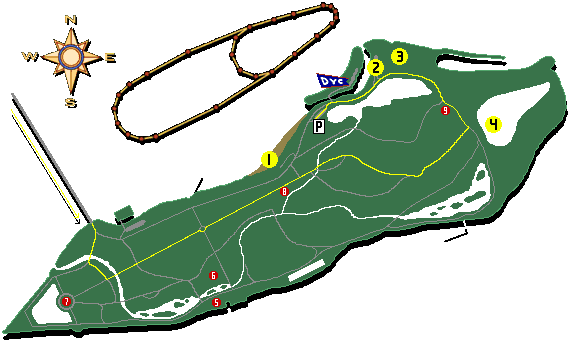
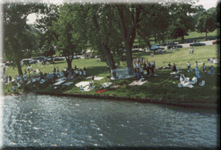
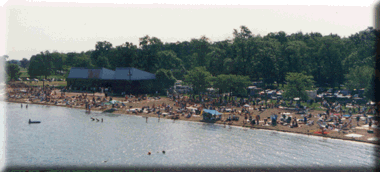

|
Belle Isle is a 5 minute drive East on Jefferson from Downtown Detroit. The General Douglas MacArthur (Belle Isle) Bridge is at Jefferson & Grand Boulevard. For a more complete map of the area, see the Course Map. |

| This first photo is of fans enjoying the racing action from a shady riverbank along the Detroit River, and the second photo is of the crowd on the west Belle Isle Pier. |

![[Belle Isle Crowd Photo]](bicrwd3.gif)

|
The Belle Isle pit area. The R/V parking area. Overnight parking is available. For more information see our Parking & R/V Info page.
Limited parking is available on the streets of Belle Isle, and this is the overflow parking area. There is a nominal on-site fee for this area (proceeds go to the City of Detroit). This small island is the Detroit Yacht Club. Note that this is a private area open only to DYC members.
Dossin Great Lakes Museum. This is a MUST-SEE for boating fans! Scale-model Great Lakes ships, maritime memorabilia and special hands-on exhibits make this museum entertaining for young and old alike. Open Wed. - Sun. 10-4 (Year Round).
Scott Memorial Fountain. This huge carved marble statue was designed by Cass Gilbert and has been called "America's Greatest Statue". Belle Isle Zoo. Built on 13 acres, the zoo is another regular favorite with the kids and features an elevated walkway for viewing. Treat yourself to a mini-safari 10-5 daily (May 1 - Oct 31). Nature Center. Information on Belle Isle's flora and fauna, and a nature trail that's handicapped accessible. Open Wed. - Sun. 10-4 (Year Round).
All contents Copyright © 1997-2001 Spirit of Detroit THUNDERFEST, except where noted.
Web page created by Brian Reed.
|